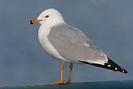
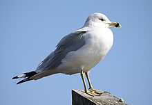
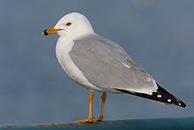
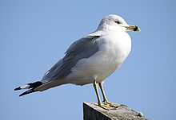

| Ring-billed Gull | |
|---|---|
|  | |
| Adult breeding | |
|  | |
| Adult non-breeding | |
| Conservation status | |
| Binomial name | |
| Larus delawarensis Ord, 1815 |
| Ring-billed Gull | |
|---|---|
|  | |
| Adult breeding | |
|  | |
| Adult non-breeding | |
| Conservation status | |
| Binomial name | |
| Larus delawarensis Ord, 1815 |
The Ring-billed Gull (Larus delawarensis) is a medium-sized gull.
Adults are 49 cm (19 in) length and with a 124 cm (49 in) wingspan. The head, neck and underparts are white; the relatively short bill is yellow with a dark ring; the back and wings are silver gray; and the legs are yellow. The eyes are yellow with red rims. This gull takes three years to reach its breeding plumage; its appearance changes with each fall moult.
Their breeding habitat is near lakes, rivers or the coast in Canada and the northern United States. They nest colonially on the ground, often on islands. This bird tends to be faithful to its nesting site, if not its mate, from year to year.
They are migratory and most move south to the Gulf of Mexico and the Atlantic and Pacific coasts of North America, also the Great Lakes.
This gull is a regular wanderer to western Europe. In Ireland and Great Britain it is no longer classed as a rarity, with several birds regularly wintering in these countries.
These birds forage in flight or pick up objects while swimming, walking or wading. They also steal food from other birds and frequently scavenge. They are omnivorous; their diet may include insects, fish, grain, eggs, earthworms and rodents. These birds are opportunistic and have adapted well to taking food discarded or even left unattended by people. It is regarded as a pest by many beach-goers because of its willingness to steal unguarded food on highly crowded beaches. The gull's natural enemies are rats, foxes, cats, raccoons, coyotes, hawks, eagles, and dogs.
In the late 19th century, this bird was hunted for its plumage. Its population has since rebounded and it is probably the most common gull in North America. In some areas, it is displacing less aggressive birds such as the Common Tern.

{kind=link}
{kind=link}
{kind=link}